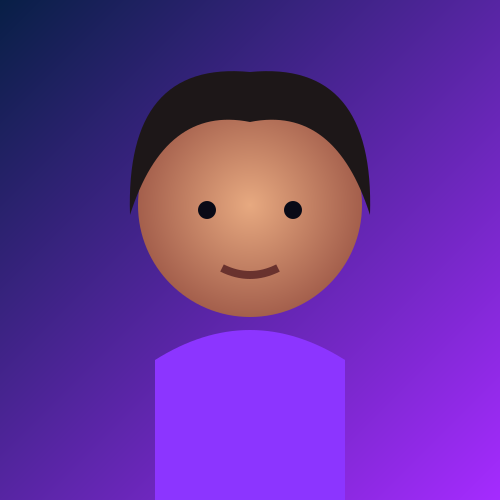

👤
Una persona sintética
El rostro se genera a partir de patrones aprendidos y no pretende identificar a una persona concreta.
¿Y si una fotografía de una persona no fuera una fotografía de una persona?
Explora rostros sintéticos, tecnología generativa, usos, riesgos y formas de analizar imágenes creadas por IA.

Es una demostración de generación de rostros: la imagen final puede parecer una fotografía, aunque la identidad representada sea sintética.
El rostro se genera a partir de patrones aprendidos y no pretende identificar a una persona concreta.
No necesitas una foto de una persona real para obtener el resultado: el modelo crea una nueva imagen.
La tecnología hace visible una idea importante: “parece real” y “es real” no significan lo mismo.
El sitio actual señala StyleGAN3 para los rostros. El proceso puede entenderse como una cadena de aprendizaje, representación y síntesis.
El modelo aprende estructuras, texturas, iluminación y relaciones visuales presentes en sus datos de entrenamiento.
Los rasgos pueden organizarse en un espacio latente donde pequeñas variaciones producen resultados diferentes.
Una semilla permite obtener una combinación concreta de características.
El sistema transforma esa representación en una imagen que puede parecer fotográfica.
Ahora sí: las imágenes están separadas como archivos individuales, por lo que funcionan en local y en GitHub Pages. Haz clic para ampliar.
Hay controles reales en toda la página: filtros, generador, zoom, favoritos, pistas, quiz y navegación.
Baraja los rostros.
Filtra la galería.
IA generativa frente a deepfake.
Abre preguntas y respuestas.
Pon a prueba tu intuición.
No son sinónimos: uno puede crear una identidad sintética; el otro suele manipular material asociado a una persona existente.
Crea una identidad visual nueva. El resultado no tiene por qué corresponder a una persona real.
Manipula contenido de una persona real. Puede alterar rostro, voz, movimiento o contexto.
No existe un “error de IA” universal. El contexto y la procedencia son fundamentales.
Este rostro es un ejemplo sintético. ¿Qué habrías pensado antes de conocer la respuesta?

La facilidad para generar imágenes convincentes también exige transparencia y criterio.
“Una cara puede parecer completamente real y, aun así, no pertenecer a nadie.”
Ejemplo visual de una identidad generada.